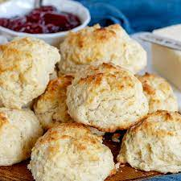

Biscuits

Description
Delicious and crumbly, these drop biscuits are sure to please. No need to cut butter, this recipe uses mayo instead.
Ingredients
- 2 cups self-rising White Lily flour
- 8 tbs Duke's Mayo
- 3/4 cup buttermilk
Steps
- Preheat oven to 400°F
- Add flour and mayo, whisk with a fork until thoroughly combined. The flour should stick when pressed together.
- Add milk, whisk with a fork until just combined
- Scoop onto a lightly greased cast iron skillet
- Bake for around 20 minutes, or until golden brown